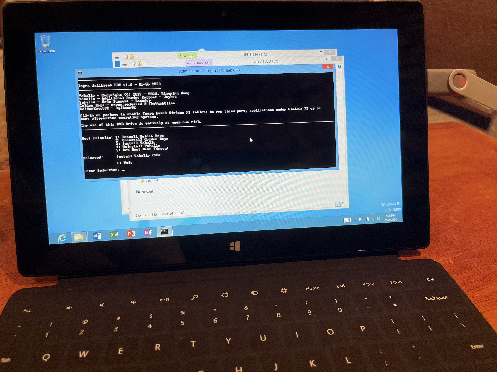
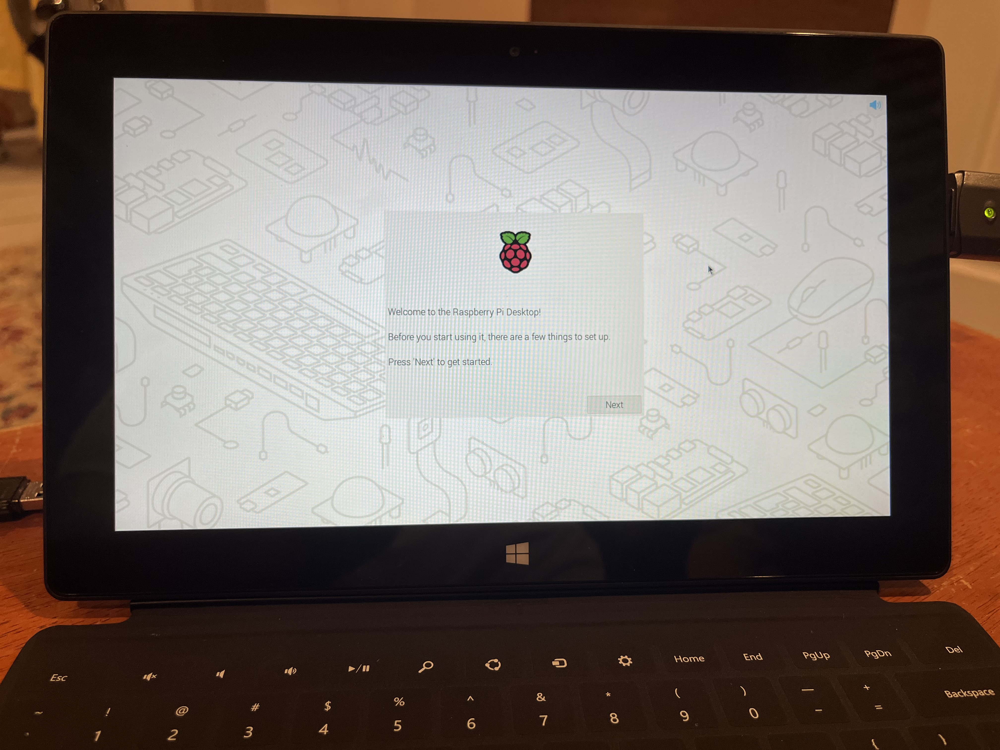
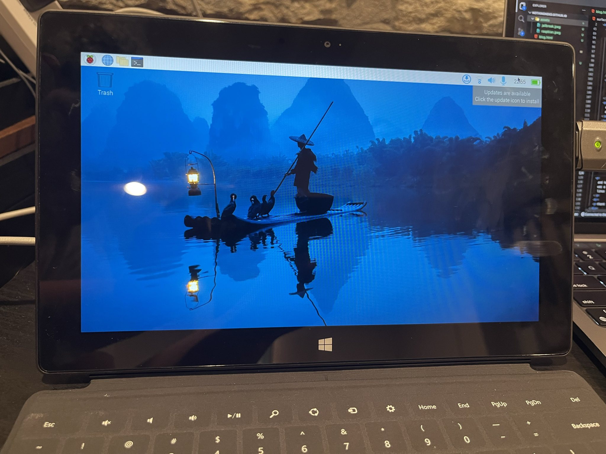
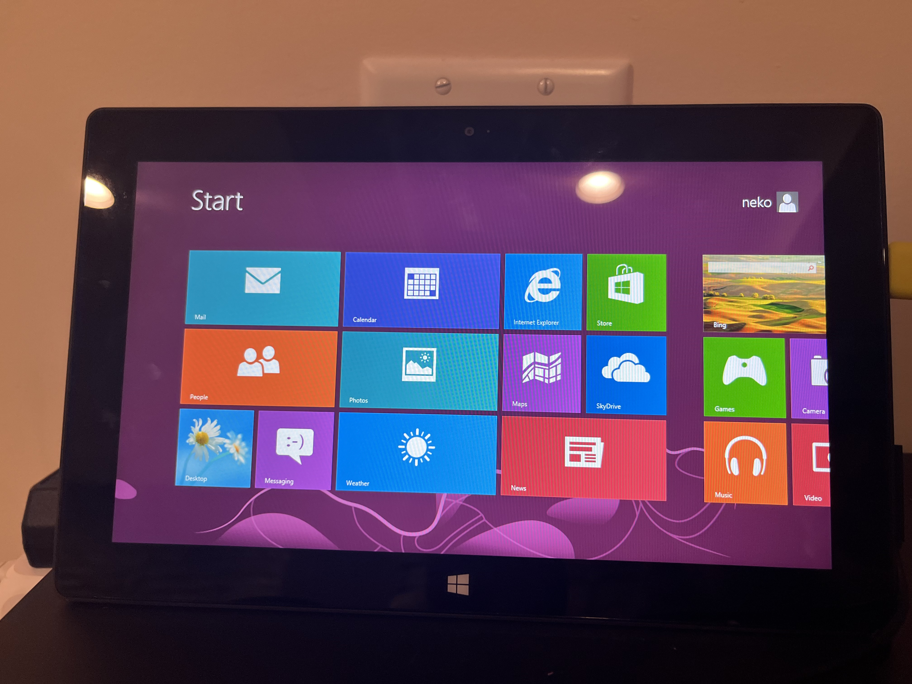

hacking on surface rt
helo, this is my first solo blog post in a very very long time. i'm jaiden, i've most notably written on the fyra blog lately. but this is entirely unrelated to ultramarine (which doesn't support armv7) and fyra (this device probably violates security policy.) so i've decided to set up my own blog and write about it here :3.
this story starts a day or two ago at free geek twin cities. one of my favourite places. i was volunteering with my bestie Owen [owensz] and Jonah [jonah]. Owen and i were both given surface rt tablets with keyboards, i got a 64gb model and Owen got a 32gb model. i dont think anyone would have bought these in the store so i dont feel that bad.
both tablets had a strange firmware issue, but i was able to get around it on the 64gb model, but the 32gb model was still softbricked. once i get home i start to reset mine, while doing this i discover something terrible, the battery in my surface was dead. i finish resetting it and put it aside for the night.
next day! owen comes over to hack on stuff together. this is where the real fun begins. i discovered that the battery was bulging (owo) on the 64gb model, so i removed it. what surprised me was how easy it was. take a look at the ifixit page, it was seriously 19 screws, no heat gun, no nothing.
seeing as my rt had a bad battery, i opted to purchase owen's in addition to mine. the 32gb model had some kind of firmware issue, which i was able to track back to a broken copy of windows. my theory is that someone attempted to install linux previously, and it went poorly.
now for the fun part, i had to jailbreak them. the docs are out of date, so join their discord if you're looking to do this yourself.
this was pretty easy once i got the right bits, you just install golden keys (which is a couple keypresses) and then run yahallo (also a couple keypresses.)
after i was done with this, i flashed one of the prebuilt raspbian images and crossed my fingers
everything i've tried so far works perfectly!
now i had a choice to make, do i want to completely wipe out windows and use linux? or keep windows. i found out that you could run a leaked build of windows 10, so i opted to keep windows on here for now. i'm going to use rt and build a custom 10 image later.
from here i (slowly) upgraded to rt 8.1, and followed the instructions to set up grub given to me by Jethrob/jeybee from the Open RT discord.
and here we are! we have raspbian on a surface rt booting from SD, this was a really fun time, and i'm excited to have a new strange machine with linux for my collection. here's a bonus picture.
thank you for listening to my rambling, so long, and thanks for all the fish!